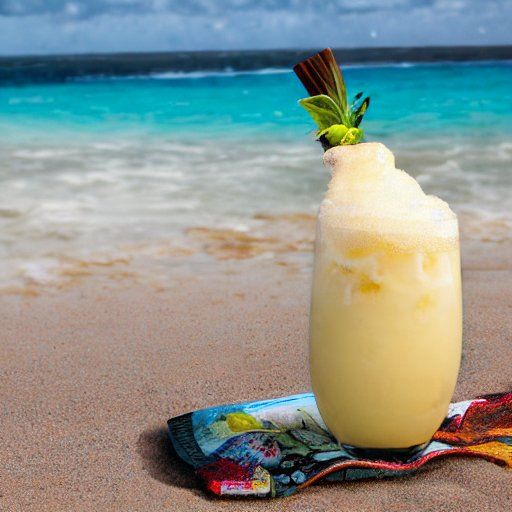

Piña Colada
Préparation: 5 minutes
Ingrédients
-
1 verre de jus d'ananas

-
1 ou 2 c. à table de rhum à la vanille
-
1 boule de crème glacée à la vanille
-
1 pincée de vanille en poudre
Instructions
Verser le jus d'ananas dans un verre.
Ajouter le rhum à la vanille. (À l'oeil 😉)
Ajouter une boule de crème glacée à la vanille.
Saupoudre de vanille en poudre sur le dessus pour la présentation.
Mélanger au robot culinaire jusqu'à ce que ça mousse.